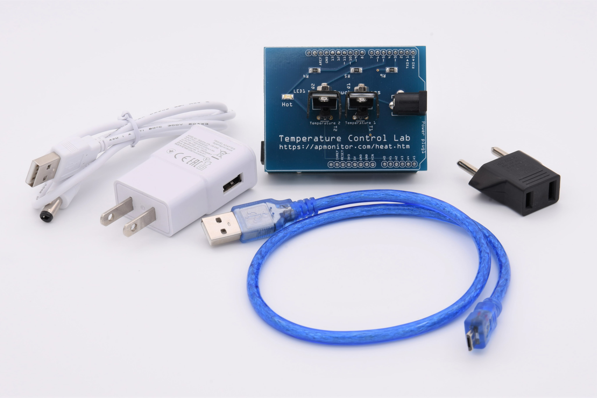

Introduction to Arduino Usage and Programming#
This guide will walk you through the basics of using and programming Arduino boards. We’ll cover the following topics:
Getting Started with the Arduino IDE
Basic Structure of Arduino Code
The
setup()andloop()FunctionsExample: Blink Sketch
Verifying and Uploading Code
Analog Data Acquisition
USB Serial Communication
Temperature Measurement and Serial Output
For this tutorial, you’ll be using the TCLab board you’ve been supplied: it’s made up of an Arduino Leonard board and a shield including temperature sensors.

Connect the Arduino board to your PC via the USB port.
1. Getting Started with the Arduino IDE#
The Arduino Integrated Development Environment (IDE) is the software you’ll use to write, verify, and upload code to your Arduino board.
Download and Install: Visit the Arduino website to download and install the Arduino IDE.
Launch the IDE: Open the Arduino IDE to start a new project.
2. Basic Structure of Arduino Code#
An Arduino sketch (program) has a simple structure. Here’s a basic outline:
void setup() {
// Code to run once at startup
}
void loop() {
// Code to run repeatedly
}
3. The setup() and loop() Functions#
setup()Function: This function runs once when the Arduino is powered on or reset. It’s used to initialize variables, pin modes, start using libraries, etc.loop()Function: This function runs repeatedly aftersetup(). It contains the main code that you want to execute continuously.
4. Example: Blink Sketch#
Let’s create a simple sketch to make an LED blink.
// Define the LED pin
const int ledPin = 13;
void setup() {
// Initialize the LED pin as an output
pinMode(ledPin, OUTPUT);
}
void loop() {
// Turn the LED on
digitalWrite(ledPin, HIGH);
// Wait for a second
delay(1000);
// Turn the LED off
digitalWrite(ledPin, LOW);
// Wait for a second
delay(1000);
}
5. Verifying and Uploading Code#
Create a new project and copy the previous code into the editor.
Verify: Click the checkmark icon in the Arduino IDE to verify your code. This will compile the code and check for errors.
Upload: Connect your Arduino board to your computer via USB. Select the correct board and port from the
Toolsmenu, then click the upload icon to upload the code to your Arduino.
The editor may generate red warnings while the upload is successful. Check that the LED on the Leonardo card is blinking.
6. Analog Data Acquisition#
To read analog data, you’ll use the analog pins (A0 to A5 on most Arduino boards).
Steps:#
Connect the Sensor: Connect your analog sensor to one of the analog pins.
Declare the Pin: In your code, declare the pin you’re using.
Read the Value: Use the
analogRead()function to read the value from the pin.
Example:#
const int sensorPin = A0;
int sensorValue = 0;
void setup() {
Serial.begin(9600); // Initialize serial communication
}
void loop() {
sensorValue = analogRead(sensorPin); // Read the value from the sensor
Serial.println(sensorValue); // Print the value to the Serial Monitor
delay(100); // Wait for 100 milliseconds
}
7. USB Serial Communication#
Serial communication allows you to send data between the Arduino and your computer.
Steps:#
Initialize Serial Communication: Use
Serial.begin(baud_rate)in thesetup()function to initialize serial communication.Send Data: Use
Serial.print()orSerial.println()to send data to the Serial Monitor.
Example:#
void setup() {
Serial.begin(9600); // Initialize serial communication at 9600 baud
}
void loop() {
Serial.println("Hello, World!"); // Send data to the Serial Monitor
delay(1000); // Wait for a second
}
8. Temperature Measurement and Serial Output#
Let’s create a sketch to read an analog value, convert it to a temperature, and send it over the serial connection.
Code:#
const int sensorPin = A0; // Analog pin 0
float degC = 0.0;
void setup() {
analogReference(EXTERNAL); // Value used as the top of the input range (here external, pin EREF between 0 and 5V)
Serial.begin(9600); // Initialize serial communication at 9600 baud
}
void loop() {
int sensorValue = analogRead(sensorPin); // Read the analog value
degC = sensorValue * .3222265625 - 50.0; // Convert to temperature
Serial.println(degC); // Send the temperature value to the Serial Monitor
delay(1000); // Wait for a second
}
Using Serial Monitor and Serial Plotter#
Serial Monitor:
Open the Arduino IDE.
Go to
Tools>Serial Monitoror click the magnifying glass icon in the top right corner.Ensure the baud rate in the Serial Monitor matches the baud rate set in
Serial.begin(9600).You will see the temperature values printed in the Serial Monitor.
Serial Plotter:
Open the Arduino IDE.
Go to
Tools>Serial Plotteror click the graph icon next to the Serial Monitor icon.Ensure the baud rate in the Serial Plotter matches the baud rate set in
Serial.begin(9600).You will see a real-time graph of the temperature values.